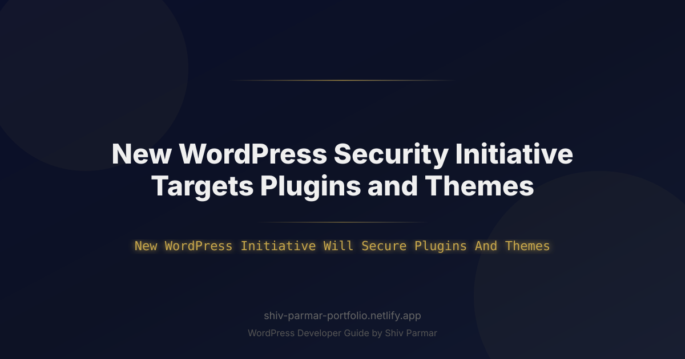

New WordPress Security Initiative Targets Plugins and Themes
Table of Contents
WordPress powers over 43% of all websites across the globe, making it the undeniable engine of the modern web. However, its greatest strength—its vibrant open-source ecosystem of over 60,000 plugins and thousands of themes—has historically presented its largest security attack surface. Over 90% of all recorded WordPress security vulnerabilities originate not from the core application itself, but within third-party extensions. For website administrators, agency owners, and enterprise IT teams, maintaining an ironclad defensive posture against supply-chain attacks, remote code execution, and cross-site scripting has felt like an endless game of whack-a-mole.
That paradigm is undergoing a massive shift. A groundbreaking security push, designed to eliminate systemic vulnerabilities across the repository software ecosystem, has been rolled out. The New WordPress Initiative Will Secure Plugins And Themes by establishing proactive code enforcement, mandatory multi-factor authentication for plugin authors, continuous automated static analysis, and real-time threat telemetry sharing. This initiative changes how code is authored, submitted, maintained, and updated across the entire ecosystem.
Whether you are a custom plugin developer, a digital agency managing hundreds of client sites, or an enterprise site owner, understanding these structural changes is essential for keeping your web assets safe, compliant, and performant. In this guide, we will break down what this initiative entails, why it matters, and how you can implement these modern security standards step-by-step within your own development pipelines.
What is the New WordPress Security Initiative?
The new security initiative represents a comprehensive overhaul of how code quality, vulnerability reporting, and developer access are handled within the WordPress ecosystem. Historically, the plugin and theme repositories relied heavily on point-in-time reviews during initial submission, paired with reactive community reporting when security researchers identified flaws. While effective to a degree, this model allowed outdated code, unmaintained dependencies, and credential-hijacking attacks to slip through the cracks.
Under the new framework, the WordPress Initiative Will introduce a continuous defense system built around four key pillars:
- Mandatory Developer Authentication & Signatures: All developers maintaining published plugins and themes must use multi-factor authentication (MFA) paired with cryptographically signed release packages to prevent supply-chain hijacking via stolen developer credentials.
- Continuous Automated SAST/DAST Scanning: The official repositories now execute continuous Static Application Security Testing (SAST) and Dynamic Application Security Testing (DAST) across all public codebases, flagging newly discovered vulnerability patterns in real time rather than waiting for external disclosures.
- Automated Abandonment & Patching Protocols: Extensions that remain unupdated while containing unpatched security vulnerabilities will trigger automated security patch deployments or graceful deprecation notices to site administrators.
- Enhanced API & REST Telemetry: Standardized security logging headers and centralized vulnerability reporting endpoints allow security teams to inspect extension behaviors without heavy performance overhead.
To understand the difference between the legacy framework and this updated security model, consider the following comparison table:
| Security Vector | Legacy Framework | New Security Initiative Framework |
|---|---|---|
| Code Auditing | One-time review during initial submission | Continuous SAST/DAST scanning on every commit and baseline re-scans |
| Developer Accounts | Basic single-factor password authentication | Mandatory Multi-Factor Authentication (MFA) and signed release keys |
| Vulnerability Response | Manual patching or temporary plugin removal | Automated security patches, rapid deprecation queues, and direct hotfixes |
| Third-Party Libraries | Unchecked bundled PHP/JS dependencies | Automated dependency audit (Composer/npm) during build verification |
| Access & Permissions | Ad-hoc capability checks left to author discretion | Enforced strict privilege checks and standardized nonce verification rules |
Why the WordPress Initiative Will Matter in 2026
As web architectures become more interconnected, the attack vectors targeting content management systems have evolved dramatically. Cybercriminals no longer waste resources attempting to breach core software engines when they can target vulnerable plugin dependencies, outdated theme scripts, or hijacked vendor developer credentials. Automated botnets continuously scan millions of domains searching for unpatched shortcode execution flaws, SQL injections, and broken access controls within lesser-known extensions.
In 2026, web security is directly linked to business continuity, search engine optimization (SEO), and regulatory compliance. Search engines actively penalize and blacklist sites serving malicious redirects or compromised scripts. A single compromised plugin can result in index poisoning, loss of customer trust, and severe fines under data protection laws like GDPR and CCPA.
Furthermore, modern web browsers and edge hosting providers are enforcing stricter Content Security Policies (CSP) and web application firewalls (WAF). If your plugin or theme executes non-compliant inline scripts, uses unescaped dynamic outputs, or makes unauthenticated asynchronous requests, modern security layers will break your site functionality. This initiative ensures that extensions built for WordPress conform to baseline security requirements, protecting both end-users and site operators from costly security breaches.
Step-by-Step Guide: Implementing the New Security Standards
To ensure your custom plugins, client builds, and commercial themes adhere to the new standards, you must integrate modern secure coding guidelines and automated testing directly into your development workflow. Follow this step-by-step guide to bring your code into full compliance.
Step 1: Auditing Existing Plugins and Themes for Compliance
Before implementing new code, run a full security audit across your existing codebase to detect insecure functions, unescaped variables, and missing capability checks. Using command-line tools like WP-CLI combined with custom audit scripts gives you immediate visibility into potential vulnerabilities.
Run the following WP-CLI commands to inspect active plugins, audit integrity, and check for core/extension updates:
# Check for outdated plugins and themes across the installation
wp plugin list --status=active --fields=name,status,version,update
wp theme list --status=active --fields=name,status,version,update
# Verify core file integrity against official checksums
wp core verify-checksums
# Verify plugin file checksums (for repository-hosted extensions)
wp plugin verify-checksums --all
For custom codebase auditing, use static analysis tools like PHP_CodeSniffer configured with the official WordPress-Coding-Standards ruleset. This identifies insecure function calls such as eval(), unescaped echo statements, and missing nonces.
Step 2: Enforcing Secure Coding Guidelines (Sanitization, Escaping, and Nonces)
The core philosophy of the new initiative requires developers to never trust user input and always escape output. Every single data entry point must be sanitized, validated, and checked for authorization before execution.
Below is a practical code example illustrating the contrast between an insecure implementation and a compliant, fully secured implementation within an AJAX handler:
<?php
/**
* INSECURE IMPLEMENTATION (DO NOT USE)
* Vulnerable to CSRF, Privilege Escalation, and Unsanitized SQL Injection/XSS.
*/
add_action( 'wp_ajax_update_user_settings_bad', 'custom_update_user_settings_bad' );
function custom_update_user_settings_bad() {
// Missing Nonce Verification!
// Missing Capability Check!
$user_id = $_POST['user_id'];
$setting = $_POST['user_setting'];
// Direct database update without sanitization
update_user_meta( $user_id, 'custom_setting', $setting );
echo "Success! Updated setting to: " . $setting; // Unescaped output!
wp_die();
}
/**
* SECURE & COMPLIANT IMPLEMENTATION
* Follows modern security guidelines for nonces, capabilities, sanitization, and escaping.
*/
add_action( 'wp_ajax_update_user_settings_secure', 'custom_update_user_settings_secure' );
function custom_update_user_settings_secure() {
// 1. Verify Nonce for Request Authenticity (CSRF Protection)
check_ajax_referer( 'custom_user_settings_nonce', 'security' );
// 2. Enforce Capability Checks (Broken Access Control Protection)
if ( ! current_user_can( 'edit_user', get_current_user_id() ) ) {
wp_send_json_error( array( 'message' => __( 'Unauthorized user permissions.', 'text-domain' ) ), 403 );
}
// 3. Sanitize and Validate Input Data
$target_user_id = isset( $_POST['user_id'] ) ? absint( $_POST['user_id'] ) : 0;
$raw_setting = isset( $_POST['user_setting'] ) ? sanitize_text_field( wp_unslash( $_POST['user_setting'] ) ) : '';
if ( $target_user_id === 0 || empty( $raw_setting ) ) {
wp_send_json_error( array( 'message' => __( 'Invalid input payload supplied.', 'text-domain' ) ), 400 );
}
// 4. Perform Safe Database Operations
$updated = update_user_meta( $target_user_id, 'custom_setting', $raw_setting );
if ( $updated ) {
// 5. Escape Output Before Sending Response
$response_data = array(
'message' => esc_html__( 'Setting successfully updated.', 'text-domain' ),
'setting' => esc_html( $raw_setting ),
);
wp_send_json_success( $response_data );
} else {
wp_send_json_error( array( 'message' => __( 'Failed to update user meta.', 'text-domain' ) ), 500 );
}
}
Step 3: Integrating Automated SAST and DAST in CI/CD Pipelines
To adhere to the standard where the New WordPress Initiative Will Secure Plugins And Themes through continuous scanning, you should integrate static security checks directly into your GitHub Actions or GitLab CI/CD pipelines. This blocks vulnerable code from ever reaching production environments.
Here is an example configuration file for a GitHub Actions workflow that executes PHP Security Static Analysis and Coding Standards checks automatically on every push or pull request:
name: Security Standards & Quality Scan
on:
push:
branches: [ "main", "develop" ]
pull_request:
branches: [ "main" ]
jobs:
security-audit:
runs-on: ubuntu-latest
steps:
- name: Checkout Repository
uses: actions/checkout@v4
- name: Setup PHP Environment
uses: shivammathur/setup-php@v2
with:
php-version: '8.2'
tools: composer, phpcs, phpstan
- name: Install Composer Dependencies
run: |
composer install --prefer-dist --no-progress --no-suggest
- name: Install WordPress Coding Standards
run: |
composer require --dev wp-coding-standards/wpcs
vendor/bin/phpcs --config-set installed_paths vendor/wp-coding-standards/wpcs
- name: Run Static Security Analysis (PHPCS)
run: |
vendor/bin/phpcs -s -p --standard=WordPress-Security,WordPress-Extra ./includes ./src
- name: Execute Static Type & Vulnerability Analysis (PHPStan)
run: |
vendor/bin/phpstan analyse src --level=5
Step 4: Safe Database Queries via Prepared Statements
Direct database queries remain one of the top security breach points in custom themes and plugins. Never concatenate user input directly into SQL queries. Instead, utilize $wpdb->prepare() to escape dynamic inputs properly.
Here is how to properly construct secure database queries for custom tables or advanced lookups:
<?php
/**
* Safely querying custom tables using $wpdb->prepare()
*/
function custom_get_secure_user_orders( $user_email, $order_status ) {
global $wpdb;
$table_name = $wpdb->prefix . 'custom_orders';
// ALWAYS use prepare with placeholders (%s for strings, %d for integers, %f for floats)
$query = $wpdb->prepare(
"SELECT order_id, total_amount, created_at
FROM {$table_name}
WHERE customer_email = %s AND status = %s
ORDER BY created_at DESC
LIMIT %d",
sanitize_email( $user_email ),
sanitize_key( $order_status ),
10
);
// Execute the prepared statement
$results = $wpdb->get_results( $query, ARRAY_A );
if ( empty( $results ) ) {
return array();
}
return $results;
}
Best Practices for WordPress Plugin and Theme Security
Building resilient web applications requires embedding defense-in-depth principles throughout your development lifecycle. Beyond basic input sanitization and output escaping, developers and system administrators should follow these core best practices to align with modern initiative guidelines:
- Implement Strict Role-Based Capability Checks: Never rely on function checks like
is_admin()for security control.is_admin()merely checks whether the current page request is loading within the dashboard context—it does NOT verify whether a user is logged in or authorized. Always usecurrent_user_can('manage_options')or specific custom capabilities. - Secure REST API Endpoints: When registering custom REST API routes using
register_rest_route(), always supply a strictpermission_callbacklogic. Never set this callback to__return_trueunless the endpoint is explicitly meant for public consumption. - Audit Third-Party PHP & JavaScript Dependencies: Modern plugins often incorporate vendor packages via Composer or npm. Run
composer auditandnpm auditwithin your development environments to detect supply-chain vulnerabilities in open-source libraries before deploying. - Enforce Strict Content Security Policies (CSP): Restrict resource loading to trusted domains. Avoid dynamic script injections, inline JavaScript execution (`eval`), or inline style injections where possible.
- Disable Direct File Execution: Include security headers and prevent direct file execution at the top of every PHP file in your plugin or theme directory.
To prevent direct file access, include this standard security block at the very top of every PHP script in your extension:
<?php
// Prevent direct script access
if ( ! defined( 'ABSPATH' ) ) {
exit; // Exit if accessed directly
}
The following table serves as a quick reference guide mapping common threat vectors to their required defensive implementation functions within the software framework:
| Threat Vector | Vulnerability Type | Required Defensive Action | Core Functions / APIs to Use |
|---|---|---|---|
| SQL Injection (SQLi) | Database Manipulation | Parameterize raw queries using placeheld statements | $wpdb->prepare(), absint() |
| Cross-Site Scripting (XSS) | Script Injection / Session Hijacking | Sanitize dynamic inputs and escape all context outputs | sanitize_text_field(), esc_html(), esc_attr(), esc_url() |
| Cross-Site Request Forgery (CSRF) | Unauthorized Action Triggering | Generate and verify cryptographically secure nonces | wp_create_nonce(), check_admin_referer(), check_ajax_referer() |
| Broken Access Control | Privilege Escalation | Verify precise user capabilities before processing logic | current_user_can(), user_can() |
| Arbitrary File Upload / RCE | Remote Code Execution | Validate file extensions, MIME types, and restrict directory access | wp_check_filetype(), wp_handle_upload() |
Common Mistakes to Avoid
Even seasoned developers can fall into architectural traps that expose sites to security threats. Avoid these widespread mistakes when writing custom code or maintaining client sites:
1. Confusing is_admin() with Permission Checking
One of the most frequent security flaws in custom extensions is using is_admin() to guard administrative logic. The is_admin() conditional function only determines if the request URL points to an administrative page (e.g., /wp-admin/). Any subscriber user or unauthenticated request calling admin-ajax.php will cause is_admin() to evaluate as true. Always use current_user_can( 'capability_name' ) to verify authorization.
2. Over-relying on Frontend Validation
Frontend validation via HTML5 form attributes or JavaScript code provides user experience convenience, but offers zero security protection. Malicious actors bypass client-side validation completely by submitting manipulated payloads directly to server endpoints via tools like curl, Postman, or custom Python scripts. All validation and sanitization must take place on the server inside PHP routines.
3. Improper Nonce Verification on REST API Endpoints
Nonces in WordPress are tied to user sessions. When creating custom REST API routes with register_rest_route(), developers often forget that default cookie authentication requires validating the X-WP-Nonce header. If you do not provide a proper permission_callback, your REST API route becomes accessible to unauthenticated remote attackers.
<?php
/**
* INSECURE REST ROUTE REGISTRATION
*/
register_rest_route( 'myplugin/v1', '/data/', array(
'methods' => 'POST',
'callback' => 'my_plugin_rest_handler',
'permission_callback' => '__return_true', // DANGER: Publicly accessible execution!
) );
/**
* SECURE REST ROUTE REGISTRATION
*/
register_rest_route( 'myplugin/v1', '/data/', array(
'methods' => 'POST',
'callback' => 'my_plugin_rest_handler',
'permission_callback' => function () {
// Enforce capability check for REST access
return current_user_can( 'edit_posts' );
},
) );
4. Dynamic Output Escaping in the Wrong Context
Using improper escaping functions can break your output or leave XSS vulnerabilities wide open. Matching the escaping function to the exact HTML execution context is required:
- Use
esc_html()for regular HTML element body text. - Use
esc_attr()for value strings placed inside HTML element attributes (e.g.,value=""ortitle=""). - Use
esc_url()for clean sanitization of link hrefs and src targets. - Use
wp_json_encode()when outputting PHP data into inline JavaScript variables.
5. Hardcoding Sensitive Keys and Secrets
Never place API keys, private encryption secrets, database credentials, or external tokens directly inside plugin or theme files. If an extension repository or server directory is compromised, hardcoded credentials are compromised instantly. Store sensitive environmental variables outside public root directories or utilize constants defined securely in wp-config.php.
Conclusion
As the web ecosystem continues to evolve, this New WordPress Initiative Will Secure Plugins And Themes by establishing stricter code review standards, automated vulnerability scanning, and faster patching protocols. By addressing security risks directly at the source—the vast library of third-party extensions—this proactive WordPress Initiative Will significantly reduce cyberthreats for millions of site owners. Ultimately, a safer plugin and theme environment ensures that WordPress remains the premier, highly reliable platform for businesses of all sizes.
While platform-level enhancements provide a stronger baseline of protection, securing an individual website still requires diligent maintenance, custom code auditing, and tailored development solutions. Keeping your site updated and compliant with new security standards is essential to preventing downtime and safeguarding sensitive user data.
If you need expert assistance implementing security upgrades, optimizing performance, or building custom solutions, professional support is just a message away. Shiv Parmar is available for WordPress development work worldwide, helping businesses create safe, scalable, and high-performing websites. Contact Shiv today to discuss your project and strengthen your digital footprint.